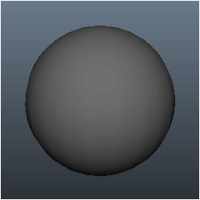
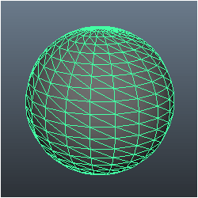
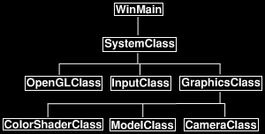
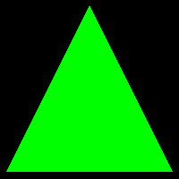

This tutorial will be the introduction to writing vertex and pixel shaders in OpenGL 4.0.
It will also be the introduction to using vertex and index buffers in OpenGL 4.0.
These are the most fundamental concepts that you need to understand and utilize to render 3D graphics.
Vertex Buffers
The first concept to understand is vertex buffers. To illustrate this concept let us take the example of a 3D model of a sphere:

The 3D sphere model is actually composed of hundreds of triangles:

Each of the triangles in the sphere model has three points to it; we call each point a vertex.
So for us to render the sphere model we need to put all the vertices that form the sphere into a special data array that we call a vertex buffer.
Once all the points of the sphere model are in the vertex buffer we can then send the vertex buffer to the GPU so that it can render the model.
Index Buffers
Index buffers are related to vertex buffers. Their purpose is to record the location of each vertex that is in the vertex buffer.
The GPU then uses the index buffer to quickly find specific vertices in the vertex buffer.
The concept of an index buffer is similar to the concept using an index in a book; it helps find the topic you are looking for at a much higher speed.
As well using index buffers can also increase the possibility of caching the vertex data in faster locations in video memory.
So it is highly advised to use these for performance reasons as well.
Vertex Shaders
Vertex shaders are small programs that are written mainly for transforming the vertices from the vertex buffer into 3D space.
There are other calculations that can be done such as calculating normals for each vertex.
The vertex shader program will be called by the GPU for each vertex it needs to process.
For example a 5,000 polygon model will run your vertex shader program 15,000 times each frame just to draw that single model.
So if you lock your graphics program to 60 fps it will call your vertex shader 900,000 times a second to draw just 5,000 triangles.
As you can tell writing efficient vertex shaders is important.
Pixel Shaders
Pixel shaders are small programs that are written for doing the coloring of the polygons that we draw.
They are run by the GPU for every visible pixel that will be drawn to the screen.
Coloring, texturing, lighting, and most other effects you plan to do to your polygon faces are handled by the pixel shader program.
Pixel shaders must be efficiently written due to the number of times they will be called by the GPU.
GLSL
GLSL is the language we use in OpenGL 4.0 to code these small vertex and pixel shader programs.
The syntax is pretty much identical to the C language with some pre-defined types.
As this is the first GLSL tutorial we will do a very simple GLSL program using OpenGL 4.0 to get started.
Updated Framework

The framework has been updated for this tutorial. Under GraphicsClass we have added three new classes called CameraClass, ModelClass, and ColorShaderClass.
CameraClass will take care of our view matrix we talked about previously. It will handle the location of the camera in the world and pass it
to shaders when they need to draw and figure out where we are looking at the scene from.
The ModelClass will handle the geometry of our 3D models, in this tutorial the 3D model will just be a single triangle for simplicity reasons.
And finally ColorShaderClass will be responsible for rendering the model to the screen invoking our GLSL shader.
We will begin the tutorial code by looking at the GLSL shader program first.
Color.vs
These will be our first shader programs.
Shaders are small programs that do the actual rendering of models.
These shaders are written in GLSL and stored in source files called color.vs and color.ps.
I placed the files with the .cpp and .h files in the engine for now.
The purpose of this shader is just to draw colored triangles as I am keeping things simple as possible in this first GLSL tutorial.
Here is the code for the vertex shader first:
////////////////////////////////////////////////////////////////////////////////
// Filename: color.vs
////////////////////////////////////////////////////////////////////////////////
The vertex shader begins by defining the version of GLSL that we are working with.
The version we are working with is 4.0.
The higher the version the more features that can be unlocked and used in the shader code.
#version 400
The next section in the vertex shader is the input vertex format.
In this tutorial each vertex will be composed of an x, y, and z position as well as an r, g, and b color.
These are floating point values and both of the input values have three floats each.
You will notice we use a special type called vec3 instead of an array of floats.
GLSL has useful types such as vec3, vec4, mat3, mat4 to make programming shaders easier and readable.
/////////////////////
// INPUT VARIABLES //
/////////////////////
in vec3 inputPosition;
in vec3 inputColor;
This next section in the vertex shader is the output variables that will be sent into the pixel shader.
The only output variable that is defined is the color since we will be sending the color into the pixel shader.
Note that the transformed input vertex position will also be sent into the pixel shader, but it is sent inside a special predefined variable called gl_Position.
//////////////////////
// OUTPUT VARIABLES //
//////////////////////
out vec3 color;
The next section in the vertex shader is the uniform variables.
These are variables that we set once and do not change for each vertex.
For this tutorial we will just set the three important matrices which are world, view, and projection.
///////////////////////
// UNIFORM VARIABLES //
///////////////////////
uniform mat4 worldMatrix;
uniform mat4 viewMatrix;
uniform mat4 projectionMatrix;
The final section in the vertex shader is the code body.
The code starts by multiplying the input vertex by the world, view, and then projection matrices.
This will place the vertex in the correct location for rendering in 3D space according to our view and then onto the 2D screen.
We store the result in the special gl_Position vector which will automatically get passed into the pixel shader.
Also note that I do set the W value of the input position to 1.0 so we can do proper calculations using the 4x4 matrices.
After that we set the output color from this vertex to be a copy of the input color.
This will allow the pixel shader to access the color.
////////////////////////////////////////////////////////////////////////////////
// Vertex Shader
////////////////////////////////////////////////////////////////////////////////
void main(void)
{
// Calculate the position of the vertex against the world, view, and projection matrices.
gl_Position = worldMatrix * vec4(inputPosition, 1.0f);
gl_Position = viewMatrix * gl_Position;
gl_Position = projectionMatrix * gl_Position;
// Store the input color for the pixel shader to use.
color = inputColor;
}
Color.ps
The pixel shader draws each pixel on the polygons that will be rendered to the screen.
This pixel shader program is very simple as we just tell it to color the pixel the same as the input value of the color.
The pixel shader receives color as an input vector and sets the outputColor output variable which represents the final pixel color.
We need to convert the input color from vec3 to vec4 so that it has an alpha component to match our pixel format.
Also remember that the pixel shader gets its input from the vertex shader output so naming variables correctly is important.
////////////////////////////////////////////////////////////////////////////////
// Filename: color.ps
////////////////////////////////////////////////////////////////////////////////
#version 400
/////////////////////
// INPUT VARIABLES //
/////////////////////
in vec3 color;
//////////////////////
// OUTPUT VARIABLES //
//////////////////////
out vec4 outputColor;
////////////////////////////////////////////////////////////////////////////////
// Pixel Shader
////////////////////////////////////////////////////////////////////////////////
void main(void)
{
outputColor = vec4(color, 1.0f);
}
Colorshaderclass.h
The ColorShaderClass is the class that we will use to compile and execute our color GLSL shaders so that we can render the 3D models that are on the GPU.
////////////////////////////////////////////////////////////////////////////////
// Filename: colorshaderclass.h
////////////////////////////////////////////////////////////////////////////////
#ifndef _COLORSHADERCLASS_H_
#define _COLORSHADERCLASS_H_
//////////////
// INCLUDES //
//////////////
#include <fstream>
using namespace std;
///////////////////////
// MY CLASS INCLUDES //
///////////////////////
#include "openglclass.h"
////////////////////////////////////////////////////////////////////////////////
// Class name: ColorShaderClass
////////////////////////////////////////////////////////////////////////////////
class ColorShaderClass
{
public:
ColorShaderClass();
ColorShaderClass(const ColorShaderClass&);
~ColorShaderClass();
The functions here handle initializing and shutdown of the shader.
The SetShaderParameters function sets the shader uniform variables and the SetShader function sets the shader code as the current rendering system.
bool Initialize(OpenGLClass*, HWND);
void Shutdown(OpenGLClass*);
void SetShader(OpenGLClass*);
bool SetShaderParameters(OpenGLClass*, float*, float*, float*);
private:
bool InitializeShader(char*, char*, OpenGLClass*, HWND);
char* LoadShaderSourceFile(char*);
void OutputShaderErrorMessage(OpenGLClass*, HWND, unsigned int, char*);
void OutputLinkerErrorMessage(OpenGLClass*, HWND, unsigned int);
void ShutdownShader(OpenGLClass*);
private:
unsigned int m_vertexShader;
unsigned int m_fragmentShader;
unsigned int m_shaderProgram;
};
#endif
Colorshaderclass.cpp
////////////////////////////////////////////////////////////////////////////////
// Filename: colorshaderclass.cpp
////////////////////////////////////////////////////////////////////////////////
#include "colorshaderclass.h"
ColorShaderClass::ColorShaderClass()
{
}
ColorShaderClass::ColorShaderClass(const ColorShaderClass& other)
{
}
ColorShaderClass::~ColorShaderClass()
{
}
The Initialize function will call the initialization function for the shaders.
We pass in the name of the GLSL shader files, in this tutorial they are named color.vs and color.ps.
bool ColorShaderClass::Initialize(OpenGLClass* OpenGL, HWND hwnd)
{
bool result;
// Initialize the vertex and pixel shaders.
result = InitializeShader("../Engine/color.vs", "../Engine/color.ps", OpenGL, hwnd);
if(!result)
{
return false;
}
return true;
}
The Shutdown function will call the shutdown of the shader.
void ColorShaderClass::Shutdown(OpenGLClass* OpenGL)
{
// Shutdown the vertex and pixel shaders as well as the related objects.
ShutdownShader(OpenGL);
return;
}
SetShader will set the color GLSL vertex and pixel shaders as the current rendering programs for drawing all 3D geometry.
void ColorShaderClass::SetShader(OpenGLClass* OpenGL)
{
// Install the shader program as part of the current rendering state.
OpenGL->glUseProgram(m_shaderProgram);
return;
}
Now we will start with one of the more important functions in this tutorial which is called InitializeShader.
This function is what actually loads the shader files and makes them useable to OpenGL and the GPU.
You will also see the setup of how the vertex buffer data is going to look on the graphics pipeline in the GPU.
The input variables will need to match the VertexType in the modelclass.h file (which will be covered shortly) as well as the inputs variables defined in the color.vs file.
bool ColorShaderClass::InitializeShader(char* vsFilename, char* fsFilename, OpenGLClass* OpenGL, HWND hwnd)
{
const char* vertexShaderBuffer;
const char* fragmentShaderBuffer;
int status;
The first section of this function is where we load the vertex and pixel shader source files and compile them.
// Load the vertex shader source file into a text buffer.
vertexShaderBuffer = LoadShaderSourceFile(vsFilename);
if(!vertexShaderBuffer)
{
return false;
}
// Load the fragment shader source file into a text buffer.
fragmentShaderBuffer = LoadShaderSourceFile(fsFilename);
if(!fragmentShaderBuffer)
{
return false;
}
// Create a vertex and fragment shader object.
m_vertexShader = OpenGL->glCreateShader(GL_VERTEX_SHADER);
m_fragmentShader = OpenGL->glCreateShader(GL_FRAGMENT_SHADER);
// Copy the shader source code strings into the vertex and fragment shader objects.
OpenGL->glShaderSource(m_vertexShader, 1, &vertexShaderBuffer, NULL);
OpenGL->glShaderSource(m_fragmentShader, 1, &fragmentShaderBuffer, NULL);
// Release the vertex and fragment shader buffers.
delete [] vertexShaderBuffer;
vertexShaderBuffer = 0;
delete [] fragmentShaderBuffer;
fragmentShaderBuffer = 0;
// Compile the shaders.
OpenGL->glCompileShader(m_vertexShader);
OpenGL->glCompileShader(m_fragmentShader);
// Check to see if the vertex shader compiled successfully.
OpenGL->glGetShaderiv(m_vertexShader, GL_COMPILE_STATUS, &status);
if(status != 1)
{
// If it did not compile then write the syntax error message out to a text file for review.
OutputShaderErrorMessage(OpenGL, hwnd, m_vertexShader, vsFilename);
return false;
}
// Check to see if the fragment shader compiled successfully.
OpenGL->glGetShaderiv(m_fragmentShader, GL_COMPILE_STATUS, &status);
if(status != 1)
{
// If it did not compile then write the syntax error message out to a text file for review.
OutputShaderErrorMessage(OpenGL, hwnd, m_fragmentShader, fsFilename);
return false;
}
Once the GLSL programs have compiled successfully we can create a shader program object and then attach the vertex and pixel shaders to it.
We also bind the input variables and then finally link the program.
// Create a shader program object.
m_shaderProgram = OpenGL->glCreateProgram();
// Attach the vertex and fragment shader to the program object.
OpenGL->glAttachShader(m_shaderProgram, m_vertexShader);
OpenGL->glAttachShader(m_shaderProgram, m_fragmentShader);
// Bind the shader input variables.
OpenGL->glBindAttribLocation(m_shaderProgram, 0, "inputPosition");
OpenGL->glBindAttribLocation(m_shaderProgram, 1, "inputColor");
// Link the shader program.
OpenGL->glLinkProgram(m_shaderProgram);
// Check the status of the link.
OpenGL->glGetProgramiv(m_shaderProgram, GL_LINK_STATUS, &status);
if(status != 1)
{
// If it did not link then write the syntax error message out to a text file for review.
OutputLinkerErrorMessage(OpenGL, hwnd, m_shaderProgram);
return false;
}
return true;
}
The LoadShaderSourceFile function loads the shader code into a buffer that can be compiled.
char* ColorShaderClass::LoadShaderSourceFile(char* filename)
{
ifstream fin;
int fileSize;
char input;
char* buffer;
// Open the shader source file.
fin.open(filename);
// If it could not open the file then exit.
if(fin.fail())
{
return 0;
}
// Initialize the size of the file.
fileSize = 0;
// Read the first element of the file.
fin.get(input);
// Count the number of elements in the text file.
while(!fin.eof())
{
fileSize++;
fin.get(input);
}
// Close the file for now.
fin.close();
// Initialize the buffer to read the shader source file into.
buffer = new char[fileSize+1];
if(!buffer)
{
return 0;
}
// Open the shader source file again.
fin.open(filename);
// Read the shader text file into the buffer as a block.
fin.read(buffer, fileSize);
// Close the file.
fin.close();
// Null terminate the buffer.
buffer[fileSize] = '\0';
return buffer;
}
The OutputShaderErrorMessage function writes out errors to a text file in case the GLSL shaders could not compile.
The text file will contain the information needed to debug and correct the shader code.
void ColorShaderClass::OutputShaderErrorMessage(OpenGLClass* OpenGL, HWND hwnd, unsigned int shaderId, char* shaderFilename)
{
int logSize, i;
char* infoLog;
ofstream fout;
wchar_t newString[128];
unsigned int error, convertedChars;
// Get the size of the string containing the information log for the failed shader compilation message.
OpenGL->glGetShaderiv(shaderId, GL_INFO_LOG_LENGTH, &logSize);
// Increment the size by one to handle also the null terminator.
logSize++;
// Create a char buffer to hold the info log.
infoLog = new char[logSize];
if(!infoLog)
{
return;
}
// Now retrieve the info log.
OpenGL->glGetShaderInfoLog(shaderId, logSize, NULL, infoLog);
// Open a file to write the error message to.
fout.open("shader-error.txt");
// Write out the error message.
for(i=0; i<logSize; i++)
{
fout << infoLog[i];
}
// Close the file.
fout.close();
// Convert the shader filename to a wide character string.
error = mbstowcs_s(&convertedChars, newString, 128, shaderFilename, 128);
if(error != 0)
{
return;
}
// Pop a message up on the screen to notify the user to check the text file for compile errors.
MessageBox(hwnd, L"Error compiling shader. Check shader-error.txt for message.", newString, MB_OK);
return;
}
The OutputLinkerErrorMessage function writes out the linker errors to a text file in the event that the linking in the InitializeShader function was not successful.
void ColorShaderClass::OutputLinkerErrorMessage(OpenGLClass* OpenGL, HWND hwnd, unsigned int programId)
{
int logSize, i;
char* infoLog;
ofstream fout;
// Get the size of the string containing the information log for the failed shader compilation message.
OpenGL->glGetProgramiv(programId, GL_INFO_LOG_LENGTH, &logSize);
// Increment the size by one to handle also the null terminator.
logSize++;
// Create a char buffer to hold the info log.
infoLog = new char[logSize];
if(!infoLog)
{
return;
}
// Now retrieve the info log.
OpenGL->glGetProgramInfoLog(programId, logSize, NULL, infoLog);
// Open a file to write the error message to.
fout.open("linker-error.txt");
// Write out the error message.
for(i=0; i<logSize; i++)
{
fout << infoLog[i];
}
// Close the file.
fout.close();
// Pop a message up on the screen to notify the user to check the text file for linker errors.
MessageBox(hwnd, L"Error compiling linker. Check linker-error.txt for message.", L"Linker Error", MB_OK);
return;
}
ShutdownShader releases the shaders and the shader program.
void ColorShaderClass::ShutdownShader(OpenGLClass* OpenGL)
{
// Detach the vertex and fragment shaders from the program.
OpenGL->glDetachShader(m_shaderProgram, m_vertexShader);
OpenGL->glDetachShader(m_shaderProgram, m_fragmentShader);
// Delete the vertex and fragment shaders.
OpenGL->glDeleteShader(m_vertexShader);
OpenGL->glDeleteShader(m_fragmentShader);
// Delete the shader program.
OpenGL->glDeleteProgram(m_shaderProgram);
return;
}
The SetShaderVariables function exists to make setting the uniform variables in the shader easier.
The matrices used in this function are created inside the GraphicsClass, after which this function is called to send them from there into the vertex shader
during the Render function call.
bool ColorShaderClass::SetShaderParameters(OpenGLClass* OpenGL, float* worldMatrix, float* viewMatrix, float* projectionMatrix)
{
unsigned int location;
// Set the world matrix in the vertex shader.
location = OpenGL->glGetUniformLocation(m_shaderProgram, "worldMatrix");
if(location == -1)
{
return false;
}
OpenGL->glUniformMatrix4fv(location, 1, false, worldMatrix);
// Set the view matrix in the vertex shader.
location = OpenGL->glGetUniformLocation(m_shaderProgram, "viewMatrix");
if(location == -1)
{
return false;
}
OpenGL->glUniformMatrix4fv(location, 1, false, viewMatrix);
// Set the projection matrix in the vertex shader.
location = OpenGL->glGetUniformLocation(m_shaderProgram, "projectionMatrix");
if(location == -1)
{
return false;
}
OpenGL->glUniformMatrix4fv(location, 1, false, projectionMatrix);
return true;
}
Modelclass.h
As stated previously the ModelClass is responsible for encapsulating the geometry for 3D models.
In this tutorial we will manually setup the data for a single green triangle.
We will also create a vertex and index buffer for the triangle so that it can be rendered.
////////////////////////////////////////////////////////////////////////////////
// Filename: modelclass.h
////////////////////////////////////////////////////////////////////////////////
#ifndef _MODELCLASS_H_
#define _MODELCLASS_H_
///////////////////////
// MY CLASS INCLUDES //
///////////////////////
#include "openglclass.h"
////////////////////////////////////////////////////////////////////////////////
// Class name: ModelClass
////////////////////////////////////////////////////////////////////////////////
class ModelClass
{
private:
Here is the definition of our vertex type that will be used with the vertex buffer in this ModelClass.
Also take note that this typedef must match the input variables layout in the ColorShaderClass as well as the GLSL vertex shader.
struct VertexType
{
float x, y, z;
float r, g, b;
};
public:
ModelClass();
ModelClass(const ModelClass&);
~ModelClass();
The functions here handle initializing and shutdown of the model's vertex and index buffers.
The Render function puts the model geometry on the video card and draws it using the GLSL color shader.
bool Initialize(OpenGLClass*);
void Shutdown(OpenGLClass*);
void Render(OpenGLClass*);
private:
bool InitializeBuffers(OpenGLClass*);
void ShutdownBuffers(OpenGLClass*);
void RenderBuffers(OpenGLClass*);
The private variables in the ModelClass are the vertex array object, vertex buffer, and index buffer IDs.
Also there are two integers to keep track of the size of the vertex and index buffers.
private:
int m_vertexCount, m_indexCount;
unsigned int m_vertexArrayId, m_vertexBufferId, m_indexBufferId;
};
#endif
Modelclass.cpp
////////////////////////////////////////////////////////////////////////////////
// Filename: modelclass.cpp
////////////////////////////////////////////////////////////////////////////////
#include "modelclass.h"
ModelClass::ModelClass()
{
}
ModelClass::ModelClass(const ModelClass& other)
{
}
ModelClass::~ModelClass()
{
}
The Initialize function will call the initialization functions for the vertex and index buffers.
bool ModelClass::Initialize(OpenGLClass* OpenGL)
{
bool result;
// Initialize the vertex and index buffer that hold the geometry for the triangle.
result = InitializeBuffers(OpenGL);
if(!result)
{
return false;
}
return true;
}
The Shutdown function will call the shutdown functions for the buffers and related data.
void ModelClass::Shutdown(OpenGLClass* OpenGL)
{
// Release the vertex and index buffers.
ShutdownBuffers(OpenGL);
return;
}
Render is called from the GraphicsClass::Render function.
This function calls RenderBuffers to put the vertex and index buffers on the graphics pipeline and uses the color shader to render them.
void ModelClass::Render(OpenGLClass* OpenGL)
{
// Put the vertex and index buffers on the graphics pipeline to prepare them for drawing.
RenderBuffers(OpenGL);
return;
}
The InitializeBuffers function is where we handle creating the vertex and index buffers.
Usually you would read in a model and create the buffers from that data file.
For this tutorial we will just set the points in the vertex and index buffer manually since it is only a single triangle.
bool ModelClass::InitializeBuffers(OpenGLClass* OpenGL)
{
VertexType* vertices;
unsigned int* indices;
First create two temporary arrays to hold the vertex and index data that we will use later to populate the final buffers with.
// Set the number of vertices in the vertex array.
m_vertexCount = 3;
// Set the number of indices in the index array.
m_indexCount = 3;
// Create the vertex array.
vertices = new VertexType[m_vertexCount];
if(!vertices)
{
return false;
}
// Create the index array.
indices = new unsigned int[m_indexCount];
if(!indices)
{
return false;
}
Now fill both the vertex and index array with the three points of the triangle as well as the index to each of the points.
Please note that I create the points in the clockwise order of drawing them.
If you do this counter clockwise it will think the triangle is facing the opposite direction and not draw it due to back face culling.
Always remember that the order in which you send your vertices to the GPU is very important.
The color is set here as well since it is part of the vertex description. I set the color to green.
// Load the vertex array with data.
// Bottom left.
vertices[0].x = -1.0f; // Position.
vertices[0].y = -1.0f;
vertices[0].z = 0.0f;
vertices[0].r = 0.0f; // Color.
vertices[0].g = 1.0f;
vertices[0].b = 0.0f;
// Top middle.
vertices[1].x = 0.0f; // Position.
vertices[1].y = 1.0f;
vertices[1].z = 0.0f;
vertices[1].r = 0.0f; // Color.
vertices[1].g = 1.0f;
vertices[1].b = 0.0f;
// Bottom right.
vertices[2].x = 1.0f; // Position.
vertices[2].y = -1.0f;
vertices[2].z = 0.0f;
vertices[2].r = 0.0f; // Color.
vertices[2].g = 1.0f;
vertices[2].b = 0.0f;
// Load the index array with data.
indices[0] = 0; // Bottom left.
indices[1] = 1; // Top middle.
indices[2] = 2; // Bottom right.
With the vertex array and index array filled out we can now use those to create the vertex buffer and index buffer.
But first we must create a vertex array object which will store all the information about the buffers and attributes
so that we can make a single call to the vertex array object to handle all the rendering for us.
Once the vertex array object is bound we can create the vertex and index buffers and load the data into them from the temporary arrays that we created above.
We also bind the vertex array attributes so that it knows the format of the data inside the vertex buffer.
Setting the last parameter in the glVertexAttribPointer function is important so that it knows the offset of where each vertex buffer element begins.
// Allocate an OpenGL vertex array object.
OpenGL->glGenVertexArrays(1, &m_vertexArrayId);
// Bind the vertex array object to store all the buffers and vertex attributes we create here.
OpenGL->glBindVertexArray(m_vertexArrayId);
// Generate an ID for the vertex buffer.
OpenGL->glGenBuffers(1, &m_vertexBufferId);
// Bind the vertex buffer and load the vertex (position and color) data into the vertex buffer.
OpenGL->glBindBuffer(GL_ARRAY_BUFFER, m_vertexBufferId);
OpenGL->glBufferData(GL_ARRAY_BUFFER, m_vertexCount * sizeof(VertexType), vertices, GL_STATIC_DRAW);
// Enable the two vertex array attributes.
OpenGL->glEnableVertexAttribArray(0); // Vertex position.
OpenGL->glEnableVertexAttribArray(1); // Vertex color.
// Specify the location and format of the position portion of the vertex buffer.
OpenGL->glBindBuffer(GL_ARRAY_BUFFER, m_vertexBufferId);
OpenGL->glVertexAttribPointer(0, 3, GL_FLOAT, false, sizeof(VertexType), 0);
// Specify the location and format of the color portion of the vertex buffer.
OpenGL->glBindBuffer(GL_ARRAY_BUFFER, m_vertexBufferId);
OpenGL->glVertexAttribPointer(1, 3, GL_FLOAT, false, sizeof(VertexType), (unsigned char*)NULL + (3 * sizeof(float)));
// Generate an ID for the index buffer.
OpenGL->glGenBuffers(1, &m_indexBufferId);
// Bind the index buffer and load the index data into it.
OpenGL->glBindBuffer(GL_ELEMENT_ARRAY_BUFFER, m_indexBufferId);
OpenGL->glBufferData(GL_ELEMENT_ARRAY_BUFFER, m_indexCount* sizeof(unsigned int), indices, GL_STATIC_DRAW);
After the vertex buffer and index buffer have been created you can delete the vertex and index arrays as they are no longer needed
since the data was copied into the buffers.
// Now that the buffers have been loaded we can release the array data.
delete [] vertices;
vertices = 0;
delete [] indices;
indices = 0;
return true;
}
The ShutdownBuffers function releases the buffers and attributes that were created in the InitializeBuffers function.
void ModelClass::ShutdownBuffers(OpenGLClass* OpenGL)
{
// Disable the two vertex array attributes.
OpenGL->glDisableVertexAttribArray(0);
OpenGL->glDisableVertexAttribArray(1);
// Release the vertex buffer.
OpenGL->glBindBuffer(GL_ARRAY_BUFFER, 0);
OpenGL->glDeleteBuffers(1, &m_vertexBufferId);
// Release the index buffer.
OpenGL->glBindBuffer(GL_ELEMENT_ARRAY_BUFFER, 0);
OpenGL->glDeleteBuffers(1, &m_indexBufferId);
// Release the vertex array object.
OpenGL->glBindVertexArray(0);
OpenGL->glDeleteVertexArrays(1, &m_vertexArrayId);
return;
}
RenderBuffers is called from the Render function.
The purpose of this function is to set the vertex buffer and index buffer as active on the input assembler in the GPU by binding the OpenGL vertex array object.
Once the GPU has an active vertex buffer it can then use the currently set shader to render that buffer.
This function also defines how those buffers should be drawn such as triangles, lines, fans, and so forth.
In this tutorial we set the vertex buffer and index buffer as active on the input assembler and tell the GPU that the buffers should be drawn as
triangles using the glDrawElements OpenGL function.
The glDrawElements function indicates also that we will be drawing using an index buffer.
void ModelClass::RenderBuffers(OpenGLClass* OpenGL)
{
// Bind the vertex array object that stored all the information about the vertex and index buffers.
OpenGL->glBindVertexArray(m_vertexArrayId);
// Render the vertex buffer using the index buffer.
glDrawElements(GL_TRIANGLES, m_indexCount, GL_UNSIGNED_INT, 0);
return;
}
Cameraclass.h
We have examined how to code GLSL shaders, how to setup vertex and index buffers, and how to invoke the GLSL
shaders to draw those buffers using the ColorShaderClass.
The one thing we are missing however is the view point to draw them from.
For this we will require a camera class to let OpenGL 4.0 know from where and also how we are viewing the scene.
The camera class will keep track of where the camera is and its current rotation.
It will use the position and rotation information to generate a view matrix which will be passed into the GLSL shaders for rendering.
////////////////////////////////////////////////////////////////////////////////
// Filename: cameraclass.h
////////////////////////////////////////////////////////////////////////////////
#ifndef _CAMERACLASS_H_
#define _CAMERACLASS_H_
//////////////
// INCLUDES //
//////////////
#include <math.h>
////////////////////////////////////////////////////////////////////////////////
// Class name: CameraClass
////////////////////////////////////////////////////////////////////////////////
class CameraClass
{
private:
struct VectorType
{
float x, y, z;
};
public:
CameraClass();
CameraClass(const CameraClass&);
~CameraClass();
void SetPosition(float, float, float);
void SetRotation(float, float, float);
void Render();
void GetViewMatrix(float*);
private:
void MatrixRotationYawPitchRoll(float*, float, float, float);
void TransformCoord(VectorType&, float*);
void BuildViewMatrix(VectorType, VectorType, VectorType);
private:
float m_positionX, m_positionY, m_positionZ;
float m_rotationX, m_rotationY, m_rotationZ;
float m_viewMatrix[16];
};
#endif
The CameraClass header is quite simple with just four functions that will be used.
The SetPosition and SetRotation functions will be used to set the position and rotation of the camera object.
Render will be used to create the view matrix based on the position and rotation of the camera.
And finally GetViewMatrix will be used to retrieve the view matrix from the camera object so that the shaders can use it for rendering.
Cameraclass.cpp
////////////////////////////////////////////////////////////////////////////////
// Filename: cameraclass.cpp
////////////////////////////////////////////////////////////////////////////////
#include "cameraclass.h"
The class constructor will initialize the position and rotation of the camera to be at the origin of the scene.
CameraClass::CameraClass()
{
m_positionX = 0.0f;
m_positionY = 0.0f;
m_positionZ = 0.0f;
m_rotationX = 0.0f;
m_rotationY = 0.0f;
m_rotationZ = 0.0f;
}
CameraClass::CameraClass(const CameraClass& other)
{
}
CameraClass::~CameraClass()
{
}
The SetPosition and SetRotation functions are used for setting up the position and rotation of the camera.
void CameraClass::SetPosition(float x, float y, float z)
{
m_positionX = x;
m_positionY = y;
m_positionZ = z;
return;
}
void CameraClass::SetRotation(float x, float y, float z)
{
m_rotationX = x;
m_rotationY = y;
m_rotationZ = z;
return;
}
The Render function uses the position and rotation of the camera to build and update the view matrix.
We first setup our variables for up, position, rotation, and so forth.
Then at the origin of the scene we first rotate the camera based on the x, y, and z rotation of the camera.
Once it is properly rotated we then translate the camera to the position in 3D space.
With the correct values in the position, lookAt, and up we can then use the BuildViewMatrix function to create the view matrix to represent
the current camera rotation and translation.
void CameraClass::Render()
{
VectorType up, position, lookAt;
float yaw, pitch, roll;
float rotationMatrix[9];
// Setup the vector that points upwards.
up.x = 0.0f;
up.y = 1.0f;
up.z = 0.0f;
// Setup the position of the camera in the world.
position.x = m_positionX;
position.y = m_positionY;
position.z = m_positionZ;
// Setup where the camera is looking by default.
lookAt.x = 0.0f;
lookAt.y = 0.0f;
lookAt.z = 1.0f;
// Set the yaw (Y axis), pitch (X axis), and roll (Z axis) rotations in radians.
pitch = m_rotationX * 0.0174532925f;
yaw = m_rotationY * 0.0174532925f;
roll = m_rotationZ * 0.0174532925f;
// Create the rotation matrix from the yaw, pitch, and roll values.
MatrixRotationYawPitchRoll(rotationMatrix, yaw, pitch, roll);
// Transform the lookAt and up vector by the rotation matrix so the view is correctly rotated at the origin.
TransformCoord(lookAt, rotationMatrix);
TransformCoord(up, rotationMatrix);
// Translate the rotated camera position to the location of the viewer.
lookAt.x = position.x + lookAt.x;
lookAt.y = position.y + lookAt.y;
lookAt.z = position.z + lookAt.z;
// Finally create the view matrix from the three updated vectors.
BuildViewMatrix(position, lookAt, up);
return;
}
The following function creates a left handed rotation matrix from the yaw, pitch, and roll values.
void CameraClass::MatrixRotationYawPitchRoll(float* matrix, float yaw, float pitch, float roll)
{
float cYaw, cPitch, cRoll, sYaw, sPitch, sRoll;
// Get the cosine and sin of the yaw, pitch, and roll.
cYaw = cosf(yaw);
cPitch = cosf(pitch);
cRoll = cosf(roll);
sYaw = sinf(yaw);
sPitch = sinf(pitch);
sRoll = sinf(roll);
// Calculate the yaw, pitch, roll rotation matrix.
matrix[0] = (cRoll * cYaw) + (sRoll * sPitch * sYaw);
matrix[1] = (sRoll * cPitch);
matrix[2] = (cRoll * -sYaw) + (sRoll * sPitch * cYaw);
matrix[3] = (-sRoll * cYaw) + (cRoll * sPitch * sYaw);
matrix[4] = (cRoll * cPitch);
matrix[5] = (sRoll * sYaw) + (cRoll * sPitch * cYaw);
matrix[6] = (cPitch * sYaw);
matrix[7] = -sPitch;
matrix[8] = (cPitch * cYaw);
return;
}
The following function multiplies a 3 float vector by a 3x3 matrice and returns the result back in the input vector.
void CameraClass::TransformCoord(VectorType& vector, float* matrix)
{
float x, y, z;
// Transform the vector by the 3x3 matrix.
x = (vector.x * matrix[0]) + (vector.y * matrix[3]) + (vector.z * matrix[6]);
y = (vector.x * matrix[1]) + (vector.y * matrix[4]) + (vector.z * matrix[7]);
z = (vector.x * matrix[2]) + (vector.y * matrix[5]) + (vector.z * matrix[8]);
// Store the result in the reference.
vector.x = x;
vector.y = y;
vector.z = z;
return;
}
The following function builds a left handed view matrix.
void CameraClass::BuildViewMatrix(VectorType position, VectorType lookAt, VectorType up)
{
VectorType zAxis, xAxis, yAxis;
float length, result1, result2, result3;
// zAxis = normal(lookAt - position)
zAxis.x = lookAt.x - position.x;
zAxis.y = lookAt.y - position.y;
zAxis.z = lookAt.z - position.z;
length = sqrt((zAxis.x * zAxis.x) + (zAxis.y * zAxis.y) + (zAxis.z * zAxis.z));
zAxis.x = zAxis.x / length;
zAxis.y = zAxis.y / length;
zAxis.z = zAxis.z / length;
// xAxis = normal(cross(up, zAxis))
xAxis.x = (up.y * zAxis.z) - (up.z * zAxis.y);
xAxis.y = (up.z * zAxis.x) - (up.x * zAxis.z);
xAxis.z = (up.x * zAxis.y) - (up.y * zAxis.x);
length = sqrt((xAxis.x * xAxis.x) + (xAxis.y * xAxis.y) + (xAxis.z * xAxis.z));
xAxis.x = xAxis.x / length;
xAxis.y = xAxis.y / length;
xAxis.z = xAxis.z / length;
// yAxis = cross(zAxis, xAxis)
yAxis.x = (zAxis.y * xAxis.z) - (zAxis.z * xAxis.y);
yAxis.y = (zAxis.z * xAxis.x) - (zAxis.x * xAxis.z);
yAxis.z = (zAxis.x * xAxis.y) - (zAxis.y * xAxis.x);
// -dot(xAxis, position)
result1 = ((xAxis.x * position.x) + (xAxis.y * position.y) + (xAxis.z * position.z)) * -1.0f;
// -dot(yaxis, eye)
result2 = ((yAxis.x * position.x) + (yAxis.y * position.y) + (yAxis.z * position.z)) * -1.0f;
// -dot(zaxis, eye)
result3 = ((zAxis.x * position.x) + (zAxis.y * position.y) + (zAxis.z * position.z)) * -1.0f;
// Set the computed values in the view matrix.
m_viewMatrix[0] = xAxis.x;
m_viewMatrix[1] = yAxis.x;
m_viewMatrix[2] = zAxis.x;
m_viewMatrix[3] = 0.0f;
m_viewMatrix[4] = xAxis.y;
m_viewMatrix[5] = yAxis.y;
m_viewMatrix[6] = zAxis.y;
m_viewMatrix[7] = 0.0f;
m_viewMatrix[8] = xAxis.z;
m_viewMatrix[9] = yAxis.z;
m_viewMatrix[10] = zAxis.z;
m_viewMatrix[11] = 0.0f;
m_viewMatrix[12] = result1;
m_viewMatrix[13] = result2;
m_viewMatrix[14] = result3;
m_viewMatrix[15] = 1.0f;
return;
}
After the Render function has been called to create the view matrix we can provide the updated view matrix to calling functions using this GetViewMatrix function.
The view matrix will be one of the three main matrices used in the GLSL vertex shader.
void CameraClass::GetViewMatrix(float* matrix)
{
matrix[0] = m_viewMatrix[0];
matrix[1] = m_viewMatrix[1];
matrix[2] = m_viewMatrix[2];
matrix[3] = m_viewMatrix[3];
matrix[4] = m_viewMatrix[4];
matrix[5] = m_viewMatrix[5];
matrix[6] = m_viewMatrix[6];
matrix[7] = m_viewMatrix[7];
matrix[8] = m_viewMatrix[8];
matrix[9] = m_viewMatrix[9];
matrix[10] = m_viewMatrix[10];
matrix[11] = m_viewMatrix[11];
matrix[12] = m_viewMatrix[12];
matrix[13] = m_viewMatrix[13];
matrix[14] = m_viewMatrix[14];
matrix[15] = m_viewMatrix[15];
return;
}
Graphicsclass.h
GraphicsClass now has the three new classes added to it.
CameraClass, ModelClass, and ColorShaderClass have headers added here as well as private member variables.
Remember that GraphicsClass is the main class that is used to render the scene by invoking all the needed class objects for the project.
////////////////////////////////////////////////////////////////////////////////
// Filename: graphicsclass.h
////////////////////////////////////////////////////////////////////////////////
#ifndef _GRAPHICSCLASS_H_
#define _GRAPHICSCLASS_H_
///////////////////////
// MY CLASS INCLUDES //
///////////////////////
#include "openglclass.h"
#include "cameraclass.h"
#include "modelclass.h"
#include "colorshaderclass.h"
/////////////
// GLOBALS //
/////////////
const bool FULL_SCREEN = true;
const bool VSYNC_ENABLED = true;
const float SCREEN_DEPTH = 1000.0f;
const float SCREEN_NEAR = 0.1f;
////////////////////////////////////////////////////////////////////////////////
// Class name: GraphicsClass
////////////////////////////////////////////////////////////////////////////////
class GraphicsClass
{
public:
GraphicsClass();
GraphicsClass(const GraphicsClass&);
~GraphicsClass();
bool Initialize(OpenGLClass*, HWND);
void Shutdown();
bool Frame();
private:
bool Render();
private:
OpenGLClass* m_OpenGL;
CameraClass* m_Camera;
ModelClass* m_Model;
ColorShaderClass* m_ColorShader;
};
#endif
Graphicsclass.cpp
////////////////////////////////////////////////////////////////////////////////
// Filename: graphicsclass.cpp
////////////////////////////////////////////////////////////////////////////////
#include "graphicsclass.h"
The first change to GraphicsClass is initializing the camera, model, and color shader objects in the class constructor to null.
GraphicsClass::GraphicsClass()
{
m_OpenGL = 0;
m_Camera = 0;
m_Model = 0;
m_ColorShader = 0;
}
GraphicsClass::GraphicsClass(const GraphicsClass& other)
{
}
GraphicsClass::~GraphicsClass()
{
}
The Initialize function has also been updated to create and initialize the three new objects.
bool GraphicsClass::Initialize(OpenGLClass* OpenGL, HWND hwnd)
{
bool result;
// Store a pointer to the OpenGL class object.
m_OpenGL = OpenGL;
// Create the camera object.
m_Camera = new CameraClass;
if(!m_Camera)
{
return false;
}
// Set the initial position of the camera.
m_Camera->SetPosition(0.0f, 0.0f, -10.0f);
// Create the model object.
m_Model = new ModelClass;
if(!m_Model)
{
return false;
}
// Initialize the model object.
result = m_Model->Initialize(m_OpenGL);
if(!result)
{
MessageBox(hwnd, L"Could not initialize the model object.", L"Error", MB_OK);
return false;
}
// Create the color shader object.
m_ColorShader = new ColorShaderClass;
if(!m_ColorShader)
{
return false;
}
// Initialize the color shader object.
result = m_ColorShader->Initialize(m_OpenGL, hwnd);
if(!result)
{
MessageBox(hwnd, L"Could not initialize the color shader object.", L"Error", MB_OK);
return false;
}
return true;
}
Shutdown is also updated to shut down and release the three new objects.
void GraphicsClass::Shutdown()
{
// Release the color shader object.
if(m_ColorShader)
{
m_ColorShader->Shutdown(m_OpenGL);
delete m_ColorShader;
m_ColorShader = 0;
}
// Release the model object.
if(m_Model)
{
m_Model->Shutdown(m_OpenGL);
delete m_Model;
m_Model = 0;
}
// Release the camera object.
if(m_Camera)
{
delete m_Camera;
m_Camera = 0;
}
// Release the pointer to the OpenGL class object.
m_OpenGL = 0;
return;
}
The Frame function has remained the same as the previous tutorial.
bool GraphicsClass::Frame()
{
bool result;
// Render the graphics scene.
result = Render();
if(!result)
{
return false;
}
return true;
}
As you would expect the Render function had the most changes to it.
It still begins with clearing the scene except that it is cleared to black.
After that it calls the Render function for the camera object to create a view matrix based on the camera's location that was set in the Initialize function.
Once the view matrix is created we get a copy of it from the camera class.
We also get copies of the world and projection matrix from the OpenGLClass object.
Next we set the color GLSL shaders as the current rendering program so that anything drawn will use those vertex and pixel shaders.
Then we call the ModelClass::Render function to draw the green triangle model geometry.
The green triangle is now drawn to the back buffer.
With that the scene is complete and we call EndScene to display it to the screen.
bool GraphicsClass::Render()
{
float worldMatrix[16];
float viewMatrix[16];
float projectionMatrix[16];
// Clear the buffers to begin the scene.
m_OpenGL->BeginScene(0.0f, 0.0f, 0.0f, 1.0f);
// Generate the view matrix based on the camera's position.
m_Camera->Render();
// Get the world, view, and projection matrices from the opengl and camera objects.
m_OpenGL->GetWorldMatrix(worldMatrix);
m_Camera->GetViewMatrix(viewMatrix);
m_OpenGL->GetProjectionMatrix(projectionMatrix);
// Set the color shader as the current shader program and set the matrices that it will use for rendering.
m_ColorShader->SetShader(m_OpenGL);
m_ColorShader->SetShaderParameters(m_OpenGL, worldMatrix, viewMatrix, projectionMatrix);
// Render the model using the color shader.
m_Model->Render(m_OpenGL);
// Present the rendered scene to the screen.
m_OpenGL->EndScene();
return true;
}
Summary
So in summary you should have learned the basics about how vertex and index buffers work and how the vertex array object encapsulates them.
You should have also learned the basics of vertex and pixel shaders and how to write them using GLSL.
And finally you should understand how we've incorporated these new concepts into our frame work to produce a green triangle that renders to the screen.
I also want to mention that I realize the code is fairly long just to draw a single triangle and it could have all been stuck inside a single main() function.
However I did it this way with a proper frame work so that the coming tutorials require very few changes in the code to do far more complex graphics.

To Do Exercises
1. Compile and run the tutorial. Ensure it draws a green triangle to the screen. Press escape to quit once it does.
2. Change the color of the triangle to red.
3. Change the triangle to a square.
4. Move the camera back 10 more units.
5. Change the pixel shader to output the color half as bright. (huge hint: multiply something in pixel shader by 0.5f)
Source Code
Source Code and Data Files: gl40src04.zip
Executable: gl40exe04.zip